The Project
- Fondazione e Ruolo: Nato nel marzo 2022 come hub di aggregazione principale per la community italiana sulla piattaforma VRChat, consolidandosi oggi come la più grande e attiva realtà nazionale nel metaverso.
- Format Musicali Innovativi: Ideazione e produzione di un evento musicale mensile pionieristico, progettato per introdurre l'utenza italiana alla club culture virtuale attraverso formati inediti e immersivi.
- Rift Showcase: Un incubatore creativo e uno spazio espositivo sviluppato per permettere ad artisti e digital designer di presentare i propri lavori, ricevere feedback cross-disciplinari e promuovere progetti, esplorando mondi virtuali come fonte di ispirazione visiva.
Club Italia Gallery
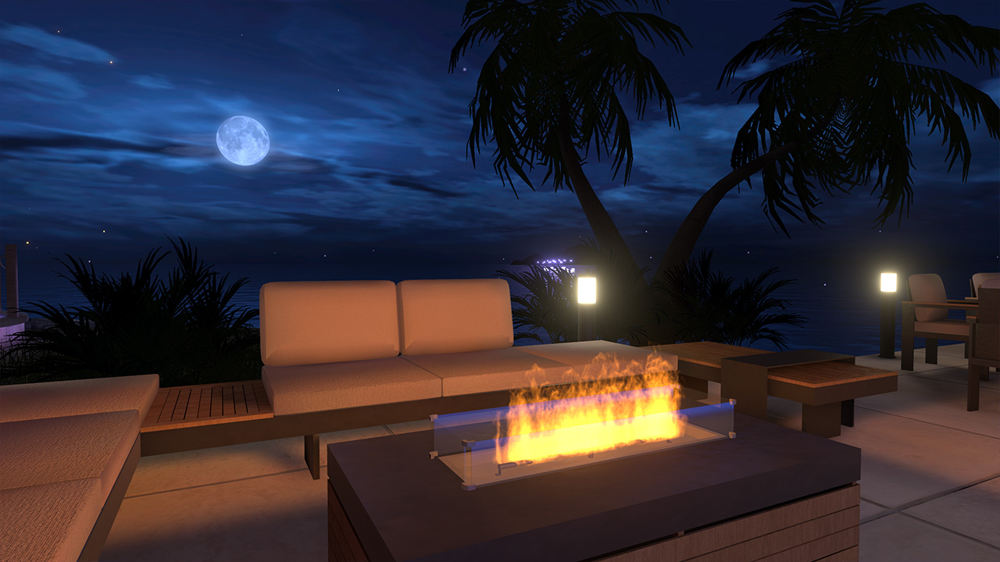
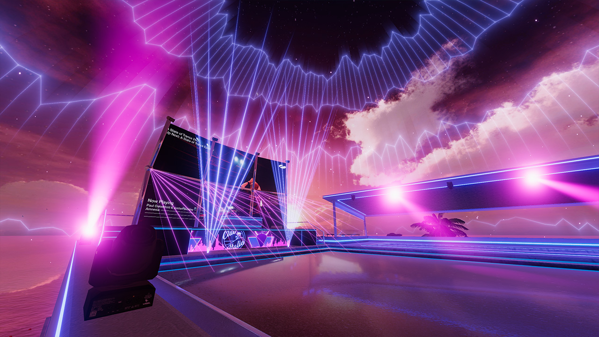
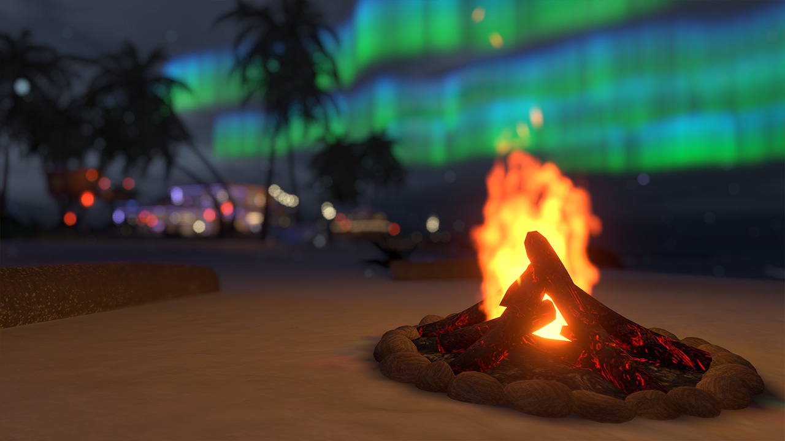
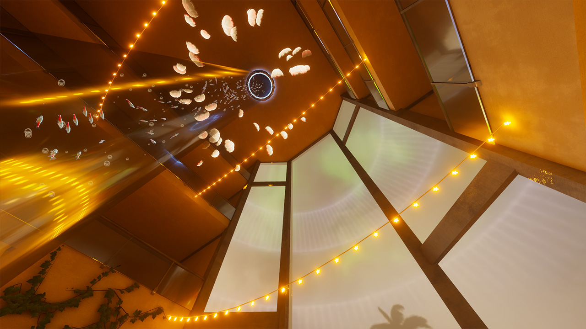
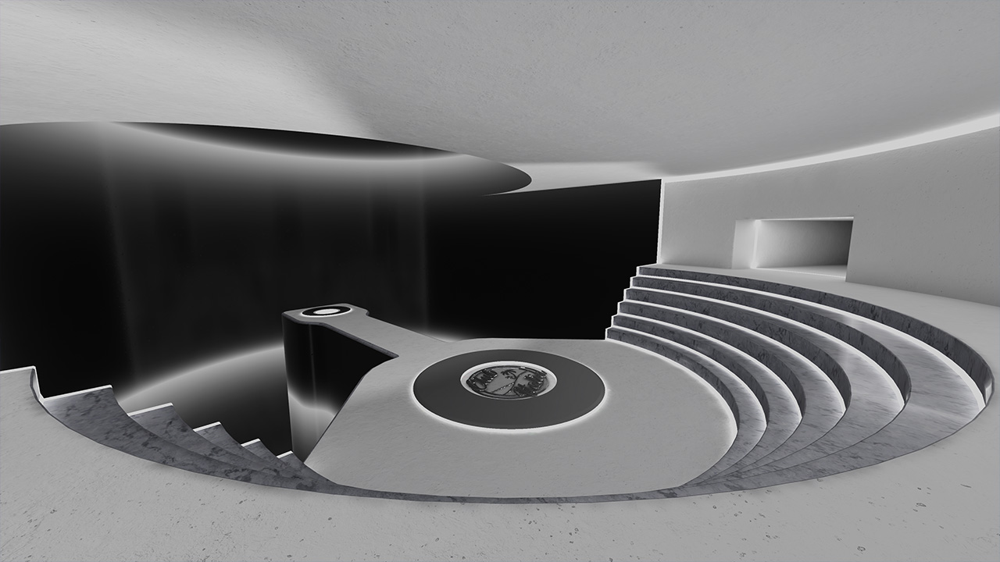
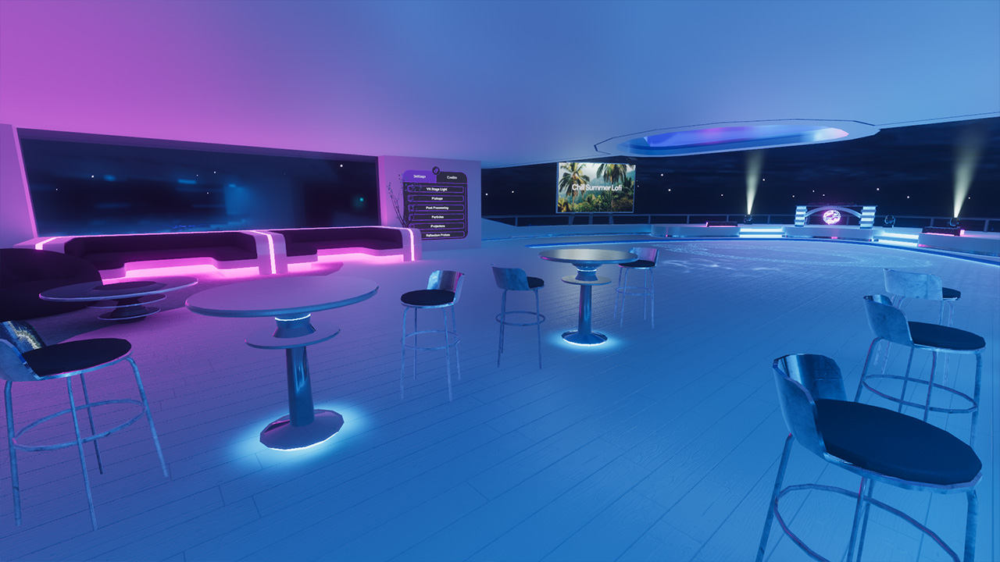
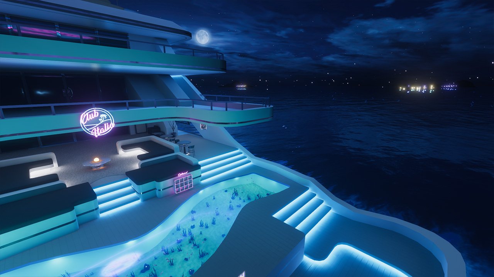
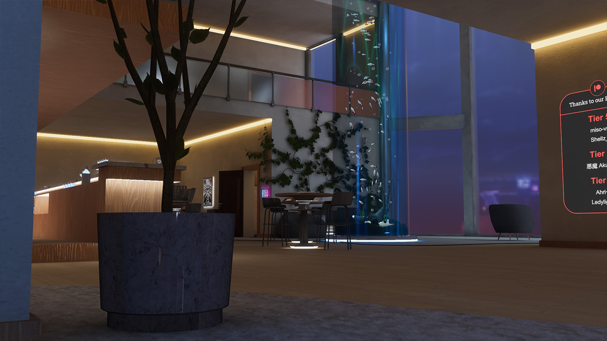
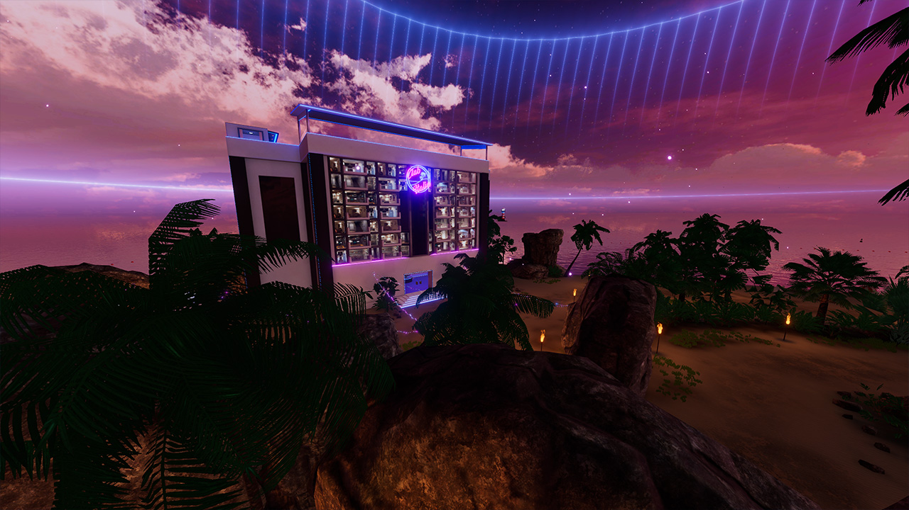
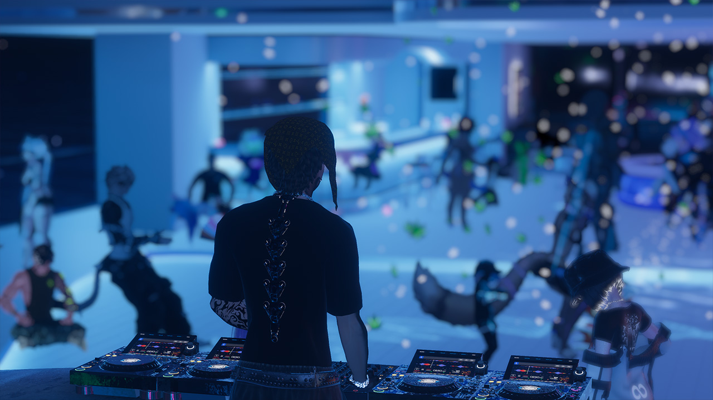
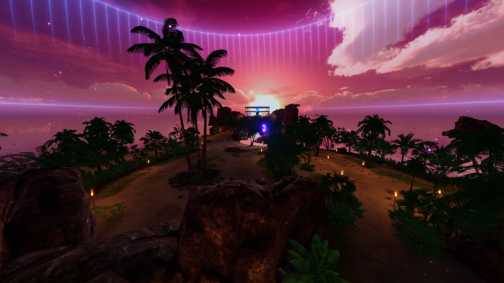
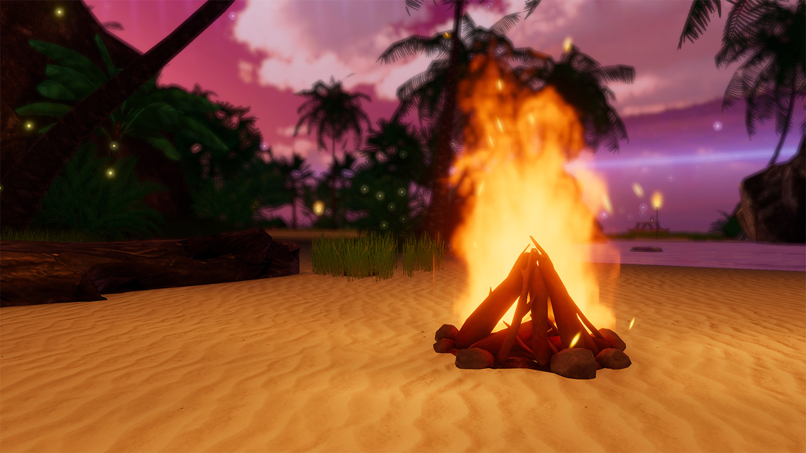
Leadership & Direction
Club Italia rappresenta la mia prima importante sfida nel ruolo di leader creativo e gestionale all'interno di una produzione su larga scala. Questo progetto è stato il mio percorso formativo più significativo: mi ha insegnato il valore della perseveranza, la capacità di accogliere il fallimento come strumento di correzione e l'importanza di evolvere costantemente per superare gli obiettivi prefissati. Sotto il profilo della direzione artistica, ho voluto sperimentare una sintesi visiva tra architettura moderna ed elementi naturali, integrando mare, spiagge e palme per dare al mondo un'identità fortemente estiva. Questa scelta stilistica nasce da un legame profondo e personale con Cagliari, la città in cui ho vissuto la maggior parte della mia vita, trasposta qui in una dimensione virtuale e immersiva.